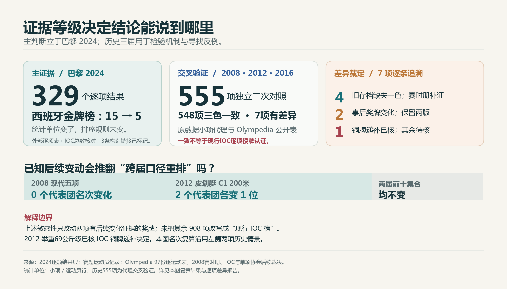

皮划艇男子 K1 1000 米
旧存档缺银牌；赛时成绩册记载挪威 Larsen 第2名。
查看页码与来源 ↗同一套奖牌排序规则下，西班牙的巴黎金牌名次由小项口径第15变成运动员行口径第5。三届历史资料用于检查这种重排机制是否脆弱；它们没有被写成现行IOC逐项授牌。

下面七项是旧抓取存档与独立公开表的差异。筛选后可见每类的处理决定；“已核对赛时结果”和“现行IOC授牌”是不同判断。
旧存档缺银牌；赛时成绩册记载挪威 Larsen 第2名。
查看页码与来源 ↗旧存档缺金牌；赛时成绩册记载中国钟满夺金。
查看页码与来源 ↗旧存档缺金牌；赛时成绩册与国际射联赛时报道记载芬兰金牌。
查看页码与来源 ↗旧存档缺铜牌；赛时成绩册记载新西兰 Docherty 铜牌。
查看页码与来源 ↗赛时册列乌克兰铜牌；后续取消资格并重新颁给白俄罗斯。将该变化代入历史代理榜后，无代表团名次变化。
查看决定与复算 ↗IOC批准俄罗斯升银、西班牙升铜。代入历史代理榜后，立陶宛第34→35、挪威第35→34；前十集合不变。
查看决定与复算 ↗IOC明确撤销原罗马尼亚铜牌；尚未取得IOC把新铜牌授给朝鲜的逐项决定。朝鲜只保留为二次来源值。
查看裁定与边界 ↗